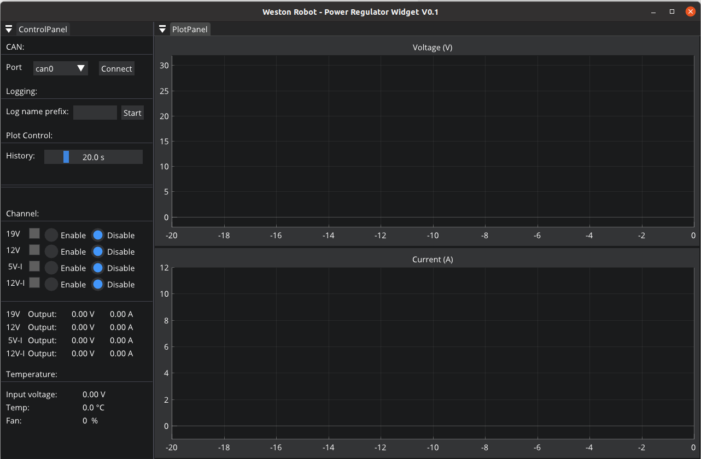

Power Regulator V2.X
Revision History
Revision |
Date (DD/MM/YYYY) |
Author |
Changes |
|---|---|---|---|
1 |
28/04/2022 |
Ruixiang |
Initial release |
2 |
31/08/2022 |
Kee Jin |
V2.2 release support |
1. Overview
The power management unit is designed by Weston Robot for mobile robot applications. It has the following features:
Stable and low output ripple for all output channels
All ports are fused for protection of both battery and connected devices
Supports soft-start to avoid current surge during startup
Temperature monitoring and regulation with active fan cooling
The output ports can be controlled individually (on/off) for finer boot sequence control
Output voltage and current feedback via CAN/RS485 communication port
2. Specifications
Power Module
Port |
Voltage |
Current (Max) |
Power |
Fused |
|---|---|---|---|---|
Main input |
18-32V |
20A |
/ |
20A fuse |
Output - 19V |
19V |
8A |
150W |
10A fuse |
Output - 12V |
12V |
10A |
120W |
15A fuse |
Output - 5V isolated |
5V |
4A |
20W |
Resettable |
Output - 12V isolated |
12V |
3.3A |
40W |
Resettable |
Output - extension |
Input voltage |
/ |
Limited by total power |
/ |
Control Module
Port |
Protocol |
Function |
|---|---|---|
CAN |
CANopen |
monitoring and control, firmware upgrade |
RS485 |
/ |
firmware upgrade (backup), future extension |
3. Hardware Setup
3.1 Startup and Operation
State |
V2.1 |
V2.2 |
||
|---|---|---|---|---|
Red LED Status |
Green LED Status |
Red LED Status |
Green LED Status |
|
Initialisation |
ON |
ON |
ON |
ON |
Calibration |
OFF |
OFF |
||
Operational |
OFF |
BLINKING |
OFF |
BLINKING |
Firmware Upgrade |
BLINKING |
OFF |
BLINKING |
OFF |
Upon start up,
[V2.1] both red and green LEDs would light up for about 2 seconds as it is initialising. Both LEDs will then switch off for another 2 seconds, indicating that the regulator is going through a state of calibration.
[V2.2] both red and green LEDs would light up for about 18 seconds. During this phase, initialisation and calibration of the power regulator takes place
After calibration, the unit would go into operational state, where the red LED would be turned off while the green LED would be blinking
If there is any firmware upgrade happening, the green LED would be turned off while red LED would be blinking
3.2 Output Connection
The output ports of the power module are exposed with Molex Megafit connectors. For each port, 2 or 4 channels are provided. Note that the channels are interconnected internally, thus the total power consumption should not exceed the power ratings of the port.
Note: The operation of the fan is dependent on the state of the 12V channel, it will operate only when the 12V channel is on. The fan will be switched on once the temperature reaches 28°C, with fan speed reaching a maximum when the temperature rises to 45°C and above.
4. Software Setup
The power regulator uses CANopen to communication with a computer. The CANopen driver for the power regulator is supported by wrp_sdk since version 1.0.0.
If you want to interact with the power regulator from your C++ program, you need to install the SDK.
If you only need to monitor and control the power regulator with a GUI, you just need to install the widget.
4.1 Install SDK
Follow the following instructions to install the latest SDK.
Install dependencies
$ sudo apt-get install -y software-properties-common
$ sudo add-apt-repository ppa:lely/ppa && sudo apt-get update
$ sudo apt-get install -y pkg-config liblely-coapp-dev liblely-co-tools
Install the SDK
Please add the debian repository to your apt-get source list firt. Refer to section Debian Repository
$ sudo apt-get install wrp_sdk
4.2 Install the Widget
Please make sure you have added the debian source as described in section Debian Repository.
# 1. install wr_regulator_widget dependencies
$ sudo apt-get install libgl1-mesa-dev libglfw3-dev libcairo2-dev
# 2. install the package
$ sudo apt-get install wr_regulator_widget
Once finished the installation, you can find the executable of the widget at “/opt/weston_robot/bin/regulator_widget”.
$ /opt/weston_robot/bin/regulator_widget/wr_regulator_widget
Run the widget and you should see the GUI like this:

5. Configuration
Setting Default State for Channels
By default, all the output channels are disabled after the power regulator is powered on for safety purpose. Nevertheless, depending on your application, you may want to have a different initial state for the output channels. For example, if your main control computer is powered by the 19V channel, you would want this channel to be on by default, only after which you can control the power sequence of other channels from your control computer.
The default state is stored in non-volatile storage ROM. Thus, once set, the settings would persist.
Install dependencies
python-can can be used to set default state for channels,
pip3 install --user canopen python-can
Configure python-can to use your CAN adapter through its configuration file. On GNU/Linux, the configuration looks similar to this:
cat << EOF > ~/.canrc
[default]
interface = socketcan
channel = can0
bitrate = 500000
EOF
Next, bring up the CAN interface on the PC.
sudo ip link set can0 type can bitrate 500000
sudo ip link set up can0
sudo ip link set can0 txqueuelen 1000
Configure with Python scripts
You can customize the default output state of each channel to be ON or OFF upon power up.
The example code below demonstrates how to set all output channels to be ON by default.
Note that you will have to finish the configuration steps in Section 5 to execute the code below successfully. And you also need to modify the path of the eds file (“EDS” variable) from the SDK.
import canopen
import os
import time
EDS = <your-path-to-eds> // eg. /opt/weston_robot/share/wrp_sdk/eds/westonrobot/regulator/regulator_v2.1.eds
NODEID = 30
network = canopen.Network()
network.connect()
node = network.add_node(NODEID, EDS)
print("----------------------")
print("Initial Output state:")
print("----------------------")
print("19V {}".format(node.sdo['Output state'][1].raw))
print("12V {}".format(node.sdo['Output state'][2].raw))
print("Isolated 12V {}".format(node.sdo['Output state'][3].raw))
print("Isolated 5V {}".format(node.sdo['Output state'][4].raw))
print("----------------------")
time.sleep(1)
print("Setting Output command (1:on, 0:off):")
print("----------------------")
node.sdo['Output command'][1].raw = 1
node.sdo['Output command'][2].raw = 1
node.sdo['Output command'][3].raw = 1
node.sdo['Output command'][4].raw = 1
node.store() # store into ROM
# node.restore() # restore ROM
network.disconnect()